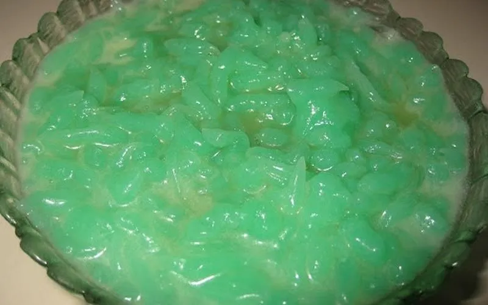

Num Lot

Num Lot is a popular sweet dessert in Cambodia. It is made of flour, starches,
pandan, coconut cream, and sugar. It can be white, but commonly colored green.
Best served cold.
Ingredients for Dish
- A potato ricer
- 1 pack of Bot Banh Gio (steamed Pork cakes flour)
- 2 tablespoons of tapioca starch
- 9 cups of water
- 2 tablespoons of pandan flavoring
- Green food coloring
Ingredients for Syrup
- 2.5 cups of sugar
- 1.5 cups of water
- 1 can of coconut cream
- 1 tablespoon of Pandan flavoring
- Pour all ingredents into an unheated pot and mix them together until dissolved.
-
After dissolving, place the pot on the stove and bring it to medium heat.
Stir continuously as it bubbles.
-
Once the mixture reaches a glue-like consistency, remove the pot from heat and
whisk it vigorously until the batter becomes a translucent paste.
-
Spoon the paste into the potato ricer and squeeze it over a bucket of ice
cold water to cool. Drain the bucket and set aside the paste until ready to serve.
-
When ready to serve, mix the 2.5 cups of sugar, 1.5 cups of water,
1 can of coconut cream, and 1 table of pandan flavoring together.
-
Pour this syrup on top before eating.
Source: cambodiarecipe.com
Return to Main Page